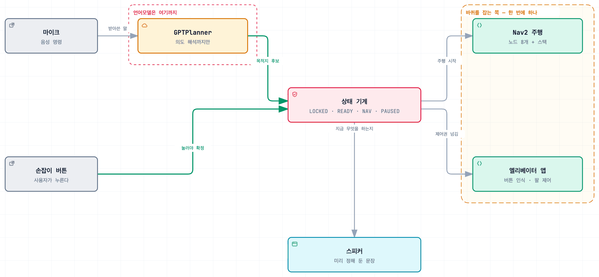
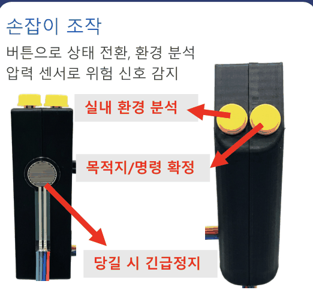
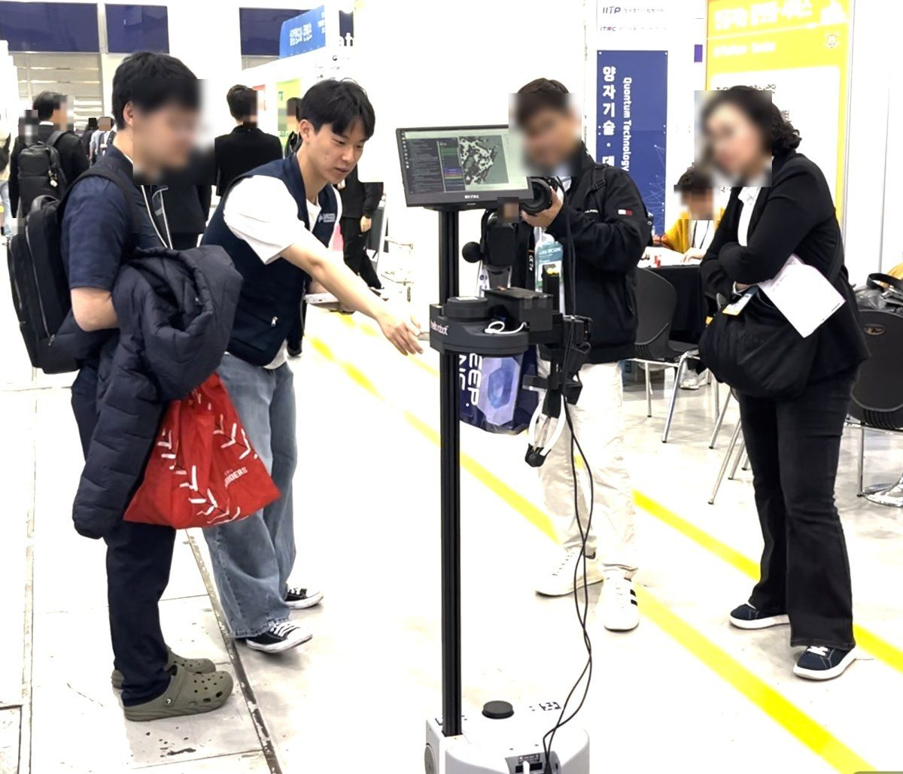
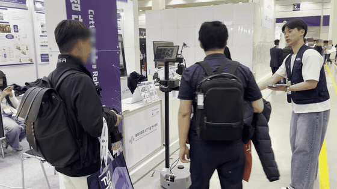

시각장애인 실내 안내 로봇
엘리베이터를 타고 층을 옮기는 안내 로봇
Impact
- 6가지물리 버튼 하나가 상태와 단계에 따라 여섯 가지 뜻으로 동작
- 1층→5층엘리베이터 버튼을 스스로 눌러 층을 넘었다 · 정상 시나리오 1회
- 239건직접 찾아 기록한 결함 · 23건은 재검증 후 스스로 취소
Background
실내 이동에서 가장 막히는 구간은 층을 넘어갈 때입니다. 기존 안내 로봇은 버튼 앞까지만 데려다주고 누르는 것은 사용자 몫으로 남깁니다.

당사자 인터뷰에서 나온 요구는 셋이었습니다.
- 층을 넘어갈 수 있어야 한다
- 사람들이 지나가는 방향을 따라 움직여야 한다
- 로봇이 알아서 움직이는 대신 상황을 설명하고 사용자의 결정을 따라야 한다
본체는 상용 제품(Hello Robot Stretch SE3)이고, 그 위의 주행·음성·엘리베이터와 이것들을 묶는 상태 기계까지 혼자 구현했습니다.
Architecture

주행과 음성, 엘리베이터를 한 프로세스에 몰아넣지 않고 위에 상태 기계를 하나 뒀습니다. 여정의 어느 단계에서도 바퀴를 움직이는 주체가 하나만 되도록 고정했습니다.
| 여정 단계 | 상태 | 바퀴 제어권 |
|---|---|---|
| 승차지점 주행 · 목적지 주행 | 주행 | Nav2 |
| 엘리베이터 시퀀스 | 잠금 | 엘리베이터 앱 |
| 층 지정 · 지도 전환 · 도착 안내 | 잠금 | 정지 |
제어권이 겹치면 팔과 바퀴가 동시에 움직입니다. 사용자가 손잡이를 쥐고 뒤에 서 있는 상태에서는 위험합니다.
Contributions
쥐는 세기 대신 올라가는 속도로 판정
직접 만든 하드웨어는 손잡이뿐입니다. 걷는 내내 쥐고 있어서 쥐는 세기로는 의도를 구분할 수 없었습니다. 세게 쥔 것과 급히 당긴 것을 힘이 올라가는 속도로 나눠서, 0.8초 안에 임계값까지 도달할 때만 당긴 것으로 보고 로봇을 멈추게 했습니다.

카메라로 버튼을 읽어 직접 가압
승강기는 제조사와 제작 연도마다 제어 방식이 달라서 연동에 쓸 수 있는 표준이 없습니다. 그래서 그리퍼에 달린 카메라로 버튼의 글자를 읽어 직접 누르도록 했습니다. 층이 바뀌면 지도를 바꾸고 위치추정을 다시 초기화하는데, 이게 어긋나면 4층에 있으면서 5층 지도로 주행하게 되므로 따로 관리했습니다.

음성 해석과 실행 사이에 물리 버튼
사용자는 로봇이 잘못 동작하는 것을 눈으로 확인할 수 없습니다. 음성 명령을 해석하는 데는 GPT를 쓰되 로봇을 실제로 움직이는 결정은 맡기지 않았습니다. 해석한 결과를 사용자에게 들려주고, 손잡이 버튼을 눌러야 실행됩니다.

사용자를 포함한 로봇 크기
Nav2는 로봇 몸체만 보고 경로를 계산하기 때문에 손잡이를 쥐고 뒤에 선 사용자가 빠져 있습니다. 로봇이 자기 크기로 삼는 영역을 사람이 서는 자리까지 뒤로 늘리고, 후진은 궤적을 끊는 설정과 벌점을 함께 걸어 막았습니다.
Troubleshooting
아래쪽 버튼이 눌리지 않는다
- 문제
- 인식 정답지를 걷어내고 나니 아래쪽 층 버튼만 계속 실패했습니다.
- 원인
- 인식 문제가 아니라 팔 구조 문제였습니다. 이 로봇의 팔은 좌우로 움직이지 못하고 앞뒤로만 늘어나서, 닿을 수 있는 위치가 선 하나로 고정됩니다. 화면 좌표만 알려주는 인식기로는 그 선 위에 있는지조차 판단할 수 없었습니다.

- 해결
- 사진과 카메라 파라미터만으로 버튼의 3차원 좌표를 복원했습니다. 촬영 날짜와 자세, 거리가 다른 세 번의 측정이 오차 5mm 안에서 일치하는 것으로 확인했습니다.
- 결과
- 버튼에 닿을 수 있는지 판단할 수 있게 되면서 베이스를 얼마나 옮길지도 계산할 수 있었습니다.
자율주행 중 5초마다 멈춘다
- 문제
- 주행이 간헐적으로 멈췄는데 언제 멈추는지 조건이 잡히지 않았습니다.
- 원인
- 두 겹이었습니다. - 주행과 엘리베이터 앱을 동시에 돌리면서 주행용 장애물 지도 갱신이 밀림 - 그것을 고치자 CPU가 모자라 제어 루프가 주기를 놓침
- 해결
- 두 프로세스를 번갈아 돌게 바꾸고, 대기 중에도 CPU를 43% 쓰던 시각 보조 기능을 요청이 있을 때만 동작하도록 옮겼습니다.
- 결과
- 대기 중 점유율이 거의 0%로 내려가고 멈춤도 사라졌습니다.
어디까지 됐는지
2026년 8월, 여섯 단계가 한 번에 이어져 1층에서 5층 목적지까지 갔습니다. 정상 시나리오로 한 번이고 반복 성공률은 재지 않았습니다.
남은 것은 둘입니다. 5층에서 1층으로 내려오는 방향은 마지막 구간을 실기체에서 돌린 적이 없고, 사용자를 포함하려고 늘린 크기가 여유폭과 겹쳐 엘리베이터 문을 1cm 차이로 통과하지 못합니다. 결함 239건을 목록으로 관리하며 안전 항목부터 처리하고 있습니다. 그중 23건은 다시 확인한 뒤 취소했습니다. 확증된 것과 정황만 있는 것을 같은 칸에 적으면 목록을 믿을 수 없게 됩니다.

